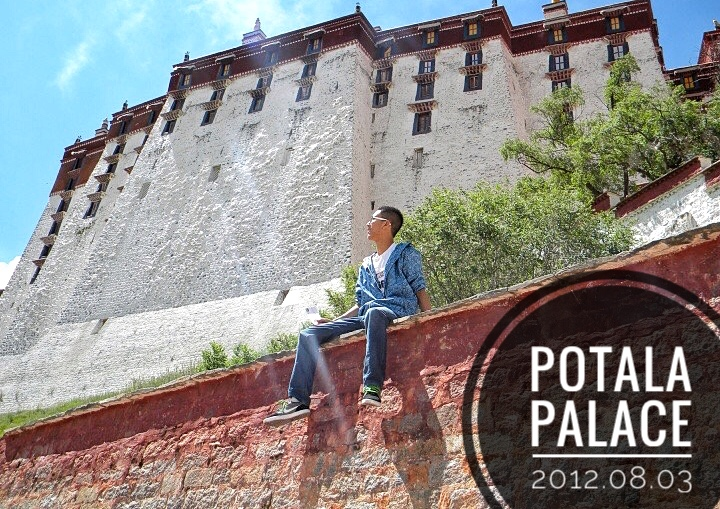

After four years rememberable study in Beihang University, I came to USA keep achieving my dream.
Now I'm 23, full of energy and curiosity, pursuing my master degree in Northeastern University.
Coding
I have great passion for all kinds of things related with Computer technology, and I always want to know how the code runs line by line.
Code output makes me really happy. I wish to beautify the world a little with my brain and ten fingers.

Travel
I like trains, I like chatting with new friends, I like photographing the same Moon standing on different places on the Earth.
Traveling around China has been my goal for a long time, and I'm realizing it step by step.

Soccer
I have been watching and playing soccer for more than 10 years, I like the feeling working as a member of a team.
I will keep running on grass until I'm too old to move.